Introduction
The aim of mapsf is to obtain thematic maps with the
visual quality of those build with a classical mapping or GIS
software.mapsf uses sf objects
to produce base graphics.mapsf functions can be classified in the following
categories:
Symbology
mf_map()is the main function of the package, it displays map layers on a georeferenced plot. Many parameters are available to fine tune the cartographic representations. These parameters are the common ones found in GIS and automatic cartography tools (e.g. classification and color palettes used in choropleth maps, symbols sizes used in proportional symbols maps…).Map Layout
Along with the cartographic functions, some other functions are dedicated to layout design (e.g. legends, scale bar, north arrow, title, credits…).Utility Functions
A set of functions is dedicated to the creation of spatial objects (e.g. links creation) or other utility tasks (e.g. color palette management, class intervals extraction, sample dataset import…).
Main Features
Symbology
mf_map() has three main arguments:
-
xan sf object -
varthe name(s) of a variable(s) to map -
typethe map layer type
The following map types are available:
-
base: displays sf
objects geometries
-
prop: displays
symbols with areas proportional to a quantitative variable
(stocks)
-
choro: areas are
shaded according to the variation of a quantitative variable
-
typo: displays a
typology map of a qualitative variable
-
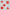
symb: displays the different modalities of a qualitative variable as symbols
-
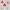
grad: displays graduated symbols
-
prop_choro:
displays symbols with sizes proportional to values of a first variable
and colored to reflect the classification of a second quantitative
variable
-
prop_typo:
displays symbols with sizes proportional to values of a first variable
and and colored to reflect the modalities of a second qualitative
variable
-
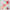
symb_choro: displays the different modalities of a first qualitative variable as symbols colored to reflect the classification of a second quantitative variable
Additionaly, mf_raster() can be used to displays raster
objects (single/multi band, continuous, classes, intervals).
Map Layout
These functions are dedicated to the map layout design.
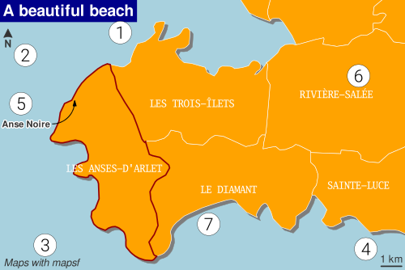
① mf_title()
|
Title of the map |
② mf_arrow()
|
North arrow |
③ mf_credits()
|
Author, sources… |
④ mf_scale()
|
Scale bar |
⑤ mf_annotation()
|
Annotations |
⑥ mf_label()
|
Labels |
⑦ mf_shadow()
|
Shadow |
Themes
mf_theme() sets a map theme. A theme is a set of
graphical parameters that are applied to maps created with
mapsf. These parameters are the figure margins, background
and foreground colors and mf_title() options.
mapsf offers some builtin themes. It’s possible to modify
an existing theme or to start a theme from scratch. Themes are
persistent across maps produced by mapsf (e.g. they survive a
dev.off() call).
🔗 See the online vignette: How to use themes
Export
mf_svg() and mf_png() export maps in SVG
and PNG formats, respectively. The exported map width/height ratio will
match the one of a spatial object.
SVG export is the perfect solution for editing maps
with desktop vector graphics software, such as Inkscape. SVG is a vector graphics
file format.
PNG export should be used for maps that do not require
further modification. PNG is a raster graphics
file format.
🔗 See the online vignette: How to export maps
Examples of thematic maps
Base map
mf_map(x, type = "base") displays sf
objects geometries.mf_get_mtq() is used to import a sample dataset as an
sf object. Use sf::st_read() to import your
own spatial datasets.
Map layout elements are set with mf_title(),
mf_credits(), mf_arrow() and
mf_scale()).
library(mapsf)
# import the sample data set
mtq <- mf_get_mtq()
# plot municipalities
mf_map(mtq, type = "base")
# layout elements
credits <- paste0("Sources: IGN, 2018\n", "mapsf ", packageVersion("mapsf"))
mf_title("Martinique")
mf_credits(credits)
mf_arrow()
mf_scale()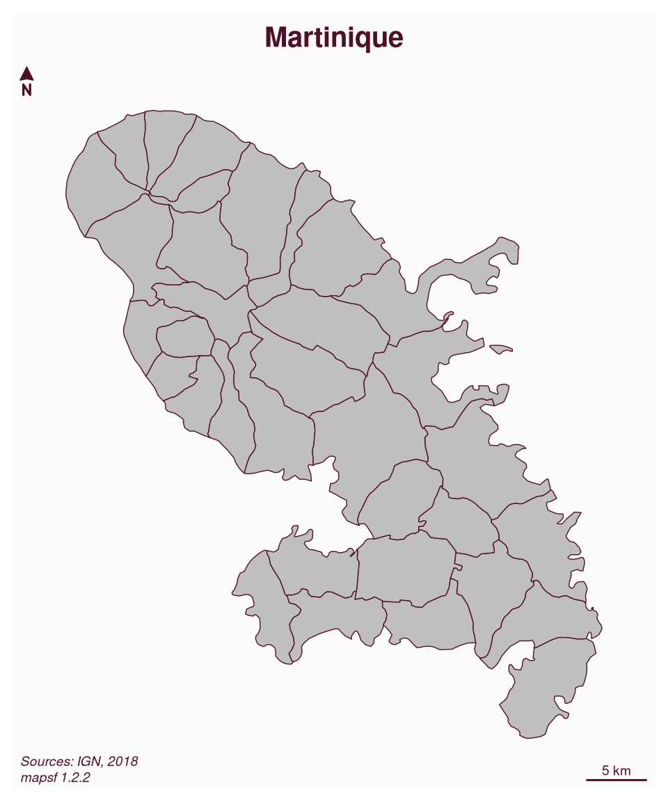
Proportional Symbols
mf_map(x, var, type = "prop") displays symbols with
areas proportional to a quantitative variable (stocks). The
inches argument is used to customize the symbols sizes.
# plot municipalities
mf_map(mtq)
# plot population
mf_map(
x = mtq,
var = "POP",
type = "prop",
inches = 0.25,
col = "brown4",
leg_pos = "topright",
leg_adj = c(0, -3),
leg_title = "Total population"
)
# layout elements
mf_title("Population Distribution in Martinique")
mf_credits(credits)
mf_arrow()
mf_scale()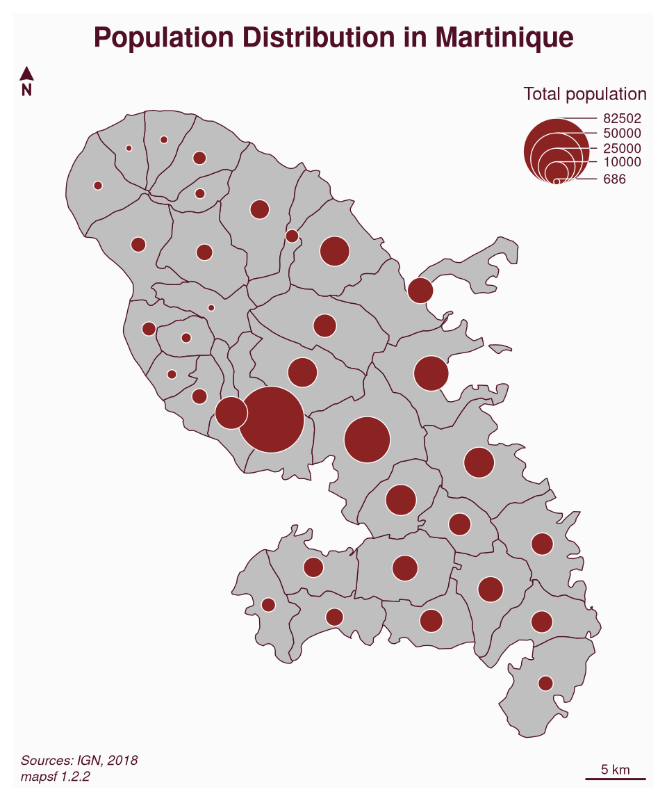
Choropleth Map
In choropleth maps, areas are shaded according to the variation of a
quantitative variable. They are used to represent ratios or
indices.mf_map(x, var, type = "choro") displays choropleth maps .
Arguments nbreaks, and breaks allow to
customize the variable classification. mf_get_breaks()
allows to classify data outside of the function itself. Colors palettes,
defined with pal, can be created with
mf_get_pal() or you can use palette names from
hcl.pals().
# population density (inhab./km2) using sf::st_area()
mtq$POPDENS <- 1e6 * mtq$POP / sf::st_area(mtq)
# plot population density
mf_map(
x = mtq,
var = "POPDENS",
type = "choro",
breaks = "geom",
nbreaks = 5,
pal = "Teal",
border = "white",
lwd = 0.5,
leg_pos = "bottomleft",
leg_adj = c(0, 6),
leg_title = "Population Density\n(inh. / km2)"
)
# layout elements
mf_title("Population Distribution in Martinique")
mf_credits(credits)
mf_arrow()
mf_scale()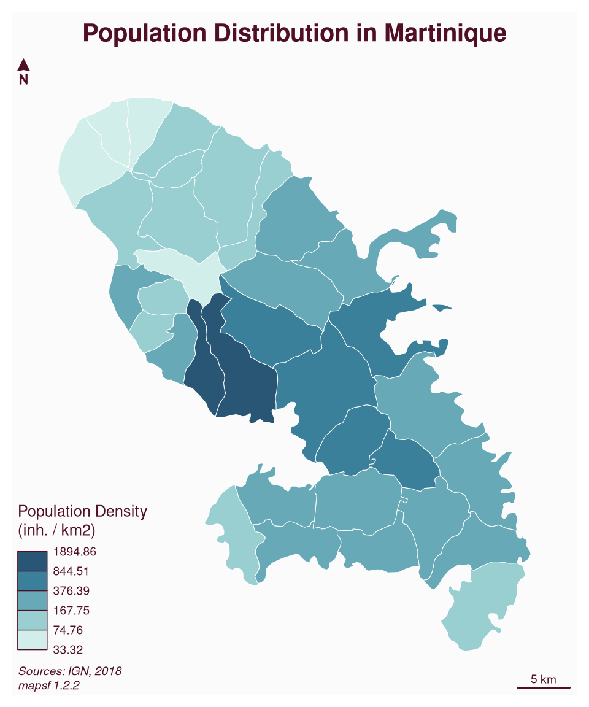
Typology Map
mf_map(x, var, type = "typo") displays a typology map of
a qualitative variable. val_order is used to set the
modalities order in the legend.
mf_label() displays labels on the map.
# plot administrative status
mf_map(
x = mtq,
var = "STATUS",
type = "typo",
pal = c("aquamarine4", "yellow3", "wheat"),
lwd = .5,
val_order = c(
"Prefecture",
"Sub-prefecture",
"Simple municipality"
),
leg_pos = "topright",
leg_adj = c(0, 1),
leg_title = ""
)
# labels for a few municipalities
mf_label(
x = mtq[mtq$STATUS != "Simple municipality", ], var = "LIBGEO",
cex = 0.9, halo = TRUE, r = 0.15
)
# layout elements
mf_title("Administrative Status")
mf_credits(credits)
mf_arrow()
mf_scale()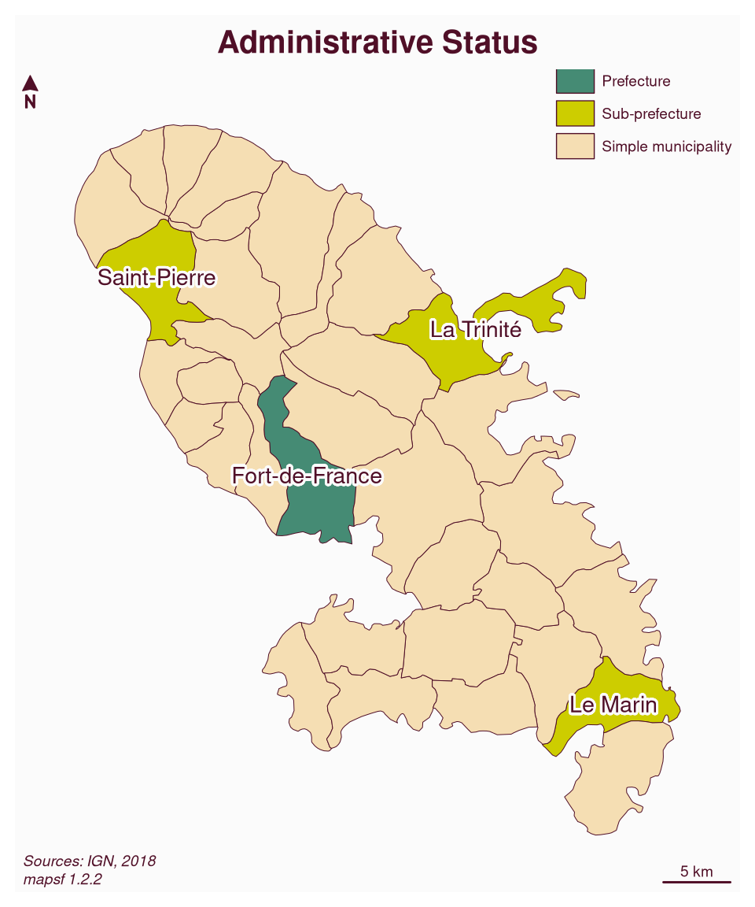
Proportional Symbols using Choropleth Coloration
mf_map(x, var, type = "prop_choro") creates a map of
symbols that are proportional to values of a first variable and colored
to reflect the classification of a second variable.
expandBB argument in mf_map() allows to
expand the map space. Here, we increase the space available on the right
of the map to avoid overlaps between the legends and the map.
# Plot the municipalities and expand the map space on the right
mf_map(x = mtq, expandBB = c(0, 0, 0, .15))
# Plot symbols with choropleth coloration
mf_map(
x = mtq,
var = c("POP", "MED"),
type = "prop_choro",
border = "grey50",
lwd = 1,
leg_pos = c("topright"),
leg_title = c("Population", "Median Income\n(in euros)"),
breaks = "equal",
nbreaks = 4,
pal = "Greens",
leg_val_rnd = c(0, -2),
leg_frame = FALSE
)
# layout elements
mf_title("Population & Wealth in Martinique, 2015")
mf_credits(credits)
mf_arrow()
mf_scale()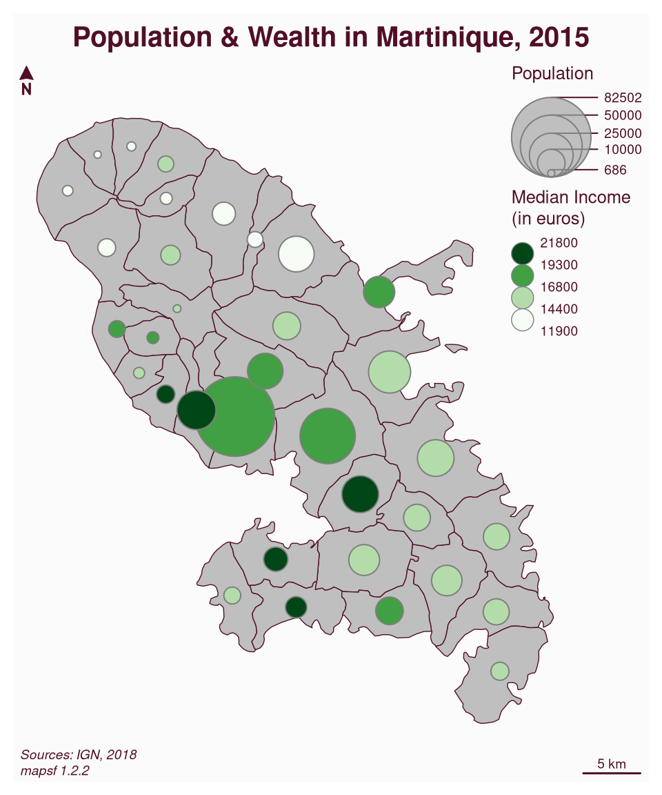
Proportional Symbols using Typology Coloration
mf_map(x, var, type = "prop_typo") creates a map of
symbols that are proportional to values of a first variable and colored
to reflect the modalities of a second qualitative variable.
# plot the municipalities and expand the map space on the right
mf_map(x = mtq, expandBB = c(0, 0, 0, .15))
# plot symbols with choropleth coloration
mf_map(
x = mtq,
var = c("POP", "STATUS"),
type = "prop_typo",
symbol = "square",
border = "white",
lwd = .5,
leg_pos = "topright",
leg_title = c("Population", "Administrative\nStatus"),
val_order = c(
"Prefecture", "Sub-prefecture",
"Simple municipality"
)
)
# layout elements
mf_title("Population Distribution in Martinique")
mf_credits(credits)
mf_arrow()
mf_scale()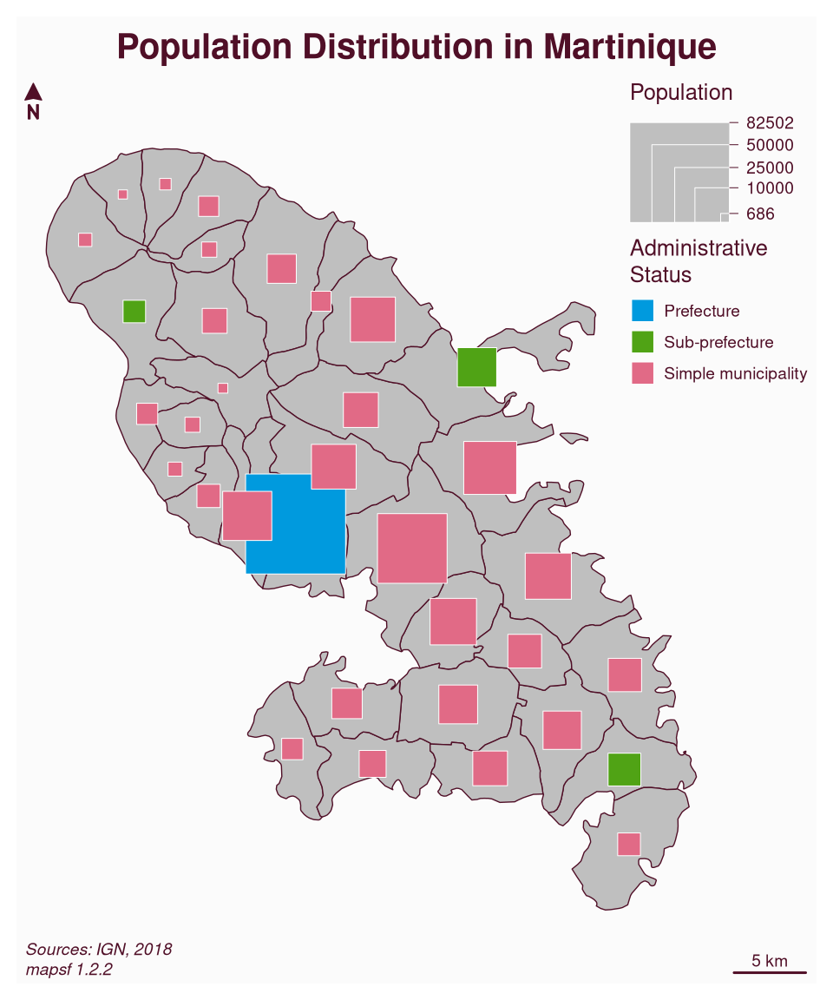
Label Map
mf_label() is dedicated to the display of labels on a
map. The overlap = FALSE argument displays non overlapping
labels.
# plot municipalities
mf_map(mtq, col = "#e4e9de", border = "darkseagreen4")
# plot labels
mf_label(
x = mtq,
var = "LIBGEO",
cex = 0.7,
font = 4,
halo = TRUE,
r = 0.1,
overlap = FALSE,
q = 3,
lines = FALSE
)
# layout elements
mf_title("Municipalities of Martinique")
mf_credits(credits)
mf_arrow(pos = "topright")
mf_scale()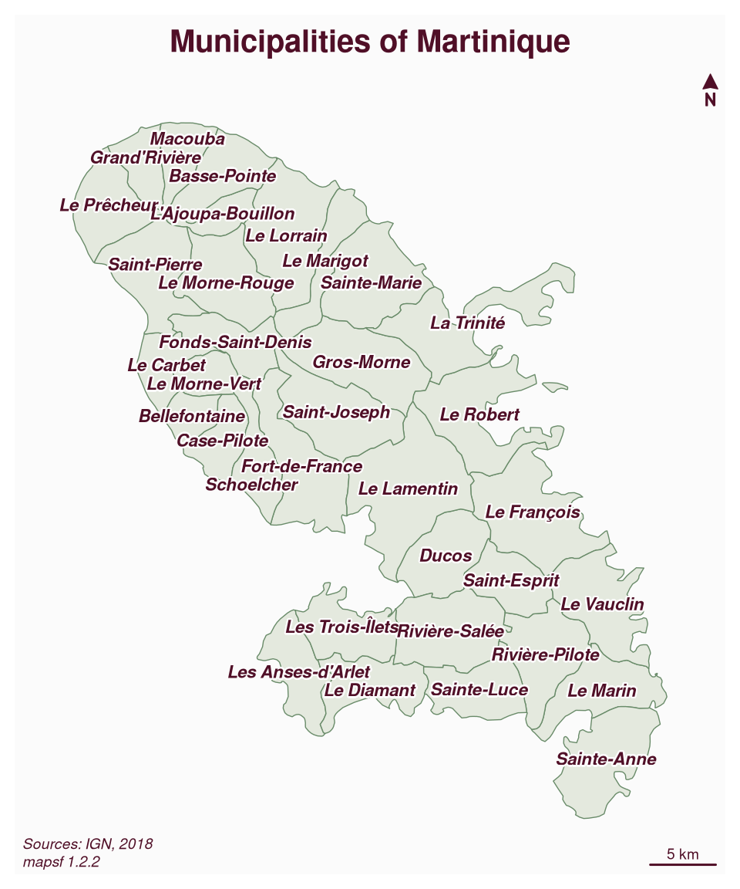
Links Map
mf_get_links() creates a link layer from an
sf object and a link data.frame (long
format).
mf_map(x, var, type = "grad") displays graduated
links.
# import the csv file embedded in mapsf
mob <- read.csv(system.file("csv/mob.csv", package = "mapsf"))
# Select links from Fort-de-France (97209))
mob_97209 <- mob[mob$i == 97209, ]
# create an sf object of links
mob_links <- mf_get_links(x = mtq, df = mob_97209)
# Plot the municipalities
mf_map(mtq)
# plot graduated links
mf_map(
x = mob_links,
var = "fij",
type = "grad",
breaks = c(100, 500, 1000, 4679.0),
lwd = c(1, 4, 8),
leg_pos = "topright",
leg_title = "Nb. of\nCommuters",
leg_val_rnd = 0
)
# layout elements
mf_title("Commuting to Fort-de-France")
mf_credits(credits)
mf_arrow()
mf_scale()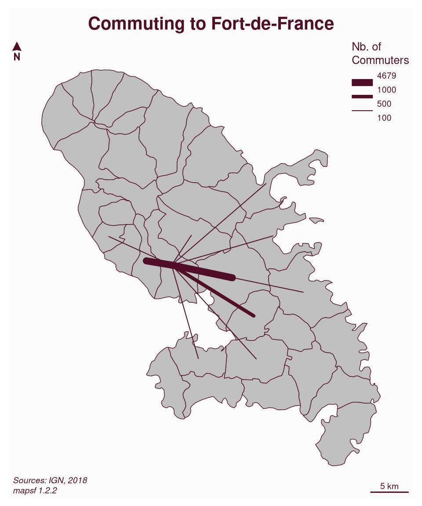
Datasets
Several datasets are embedded in the package:
- A GeoPackage of Martinique
municipalities can be imported with
mf_get_mtq()(or viasf::st_read()).- Sources: Base comparateur de territoires (data, upload date: 2018-09-25) & ADMIN EXPRESS-COG (geometry, 2018 edition).
- Citation: Insee and IGN, 2018
- Fields:
- INSEE_COM: Municipality identifier
- STATUS: Municipality administrative status
- LIBGEO: Municipality name
- POP: Total population, 2015
- MED: Median disposable income adjusted per equivalent household member, in euros, 2015
- CHOM: Unemployed population, 2015
- ACT: Active population, 2015
- A csv file of professional mobility flows between Martinique
municipalities.
- Sources: Flux de mobilité - déplacements domicile-lieu de travail (upload date: 2018-08-01)
- Citation: Insee, 2018
- Fields:
- i: Municipality of residence identifier
- j: Municipality of workplace identifier
- fij: Flows of workers (employed population, 15 y.o. or more, 2015, only flows > 100)
- sj: Administrative status of the workplace municipality